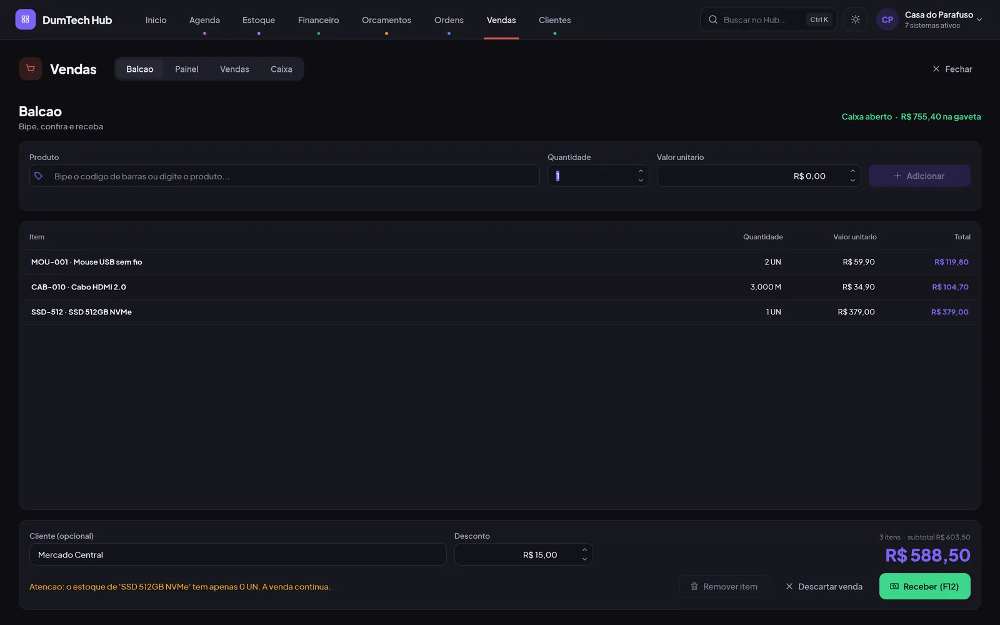

Produto DumTech · 2026
DumTech Hub
Sete sistemas de gestão num só aplicativo para Windows: estoque, balcão, financeiro, orçamentos, ordens de serviço, agenda e clientes.
- 7 módulos
- +500 testes
- Funciona offline
Construo software que põe negócios para rodar: do balcão ao banco de dados, até a nota que sai impressa na cozinha.
Sobre
Comecei auditando notas fiscais. Depois desenhei móveis sob medida e tomei conta de uma marcenaria com seis pessoas. Hoje cuido de sistemas corporativos e construo os meus na DumTech. Mudou a ferramenta, não o ofício: medir antes de cortar, construir para durar, entregar funcionando.
Projetos em destaque
Produtos da DumTech, um sistema de cliente em produção, uma automação que trocou conferência manual por cinco minutos e a central onde eu trabalho.
Produto DumTech · 2026
Sete sistemas de gestão num só aplicativo para Windows: estoque, balcão, financeiro, orçamentos, ordens de serviço, agenda e clientes.
Cliente · em produção
Loja online, painel do restaurante e impressão automática na cozinha. O pedido chega pago, sai impresso e o cliente acompanha cada etapa pelo celular.
Produto DumTech · SaaS
Custo de cardápio para restaurantes: ficha técnica, CMV, precificação, estoque, compras e financeiro no mesmo lugar.
Ferramenta pessoal · IA
Minha central de trabalho: cada empresa é uma ilha 3D, cada projeto uma construção — e o Claude executa as tarefas da fila enquanto eu acompanho.
Automação · 2025
Conferência de termos de equipamentos contra quatro bases internas. O que era feito à mão virou um relatório de divergências.
Arquivo
Ferramentas internas, trabalhos para clientes e estudos. Abra cada um para ver o que tem por dentro.
Uma camada sobre o Windows que abre no que você estava fazendo: projetos, pastas, recentes, favoritos, busca e limpeza no mesmo lugar. O sistema de arquivos é a fonte da verdade; o banco guarda só a inteligência por cima dele.
Agente para Windows que recebe os pedidos da loja por WebSocket e imprime na térmica da cozinha. É a ponta final do delivery da pizzaria.
O sistema interno da DumTech, sem framework: um micro-kernel próprio (sinais reativos, roteador, cache) e um motor que gera as telas de cadastro a partir de uma definição — busca, filtros, paginação e validação incluídos.
Painel pessoal com monitor de sites, cofre de senhas, vendas, tarefas em Kanban e vencimentos de domínio e hospedagem.
Página de venda de um produto de skincare com editor por blocos no próprio site: quem cuida da loja troca textos, fotos e links de checkout sem mexer em código.
Controle financeiro com painéis, receitas e despesas, recorrências e relatórios automáticos. Em 2026 ganhou um redesenho completo com foco em velocidade.
Shopping virtual em 3D: lojas montam e personalizam seus estandes e vendem dentro de um ambiente que você percorre como se fosse um espaço físico.
Controle de estacionamento: vagas, entradas e saídas de veículos, pensado para operação rápida no guichê.
Trajetória
Não comecei programando. Comecei conferindo, medindo e entregando — e é isso que eu ainda faço, agora com código.
2018 → 2019
Auditoria de faturamento e notas fiscais, conformidade tributária e contratual, relatórios para decisões da diretoria.
FicouO olho para a divergência que ninguém vê.
2019 → 2022
Lógica, banco de dados, engenharia de software — e os primeiros sistemas de verdade.
FicouA base para tudo o que veio depois.
2020 → 2023
Projetos 3D no Promob, detalhamento técnico, apresentação ao cliente, estoque, cronograma e uma equipe de seis pessoas.
FicouProjetar sob medida e entregar no prazo.
2023 → hoje
Relatórios com SQL e Excel avançado, inventário de hardware e software, escalonamentos com o N3 e documentação de incidentes.
FicouSistemas corporativos por dentro — e o AuditSync.
2023 → hoje
Produtos próprios para pequenos negócios e sistemas sob encomenda, do banco de dados ao instalador.
FicouTudo o que veio antes, no mesmo lugar.
Ficha técnica
Contato
Tem um sistema para tirar do papel ou uma vaga para preencher? Me conte o que você precisa. Respondo por e‑mail.
Produto DumTech · 2026
Sete sistemas de gestão num só aplicativo para Windows. Cada módulo é vendido separado e aparece no Hub conforme a licença do cliente.

Cliente · em produção
Loja online, painel do restaurante e impressão automática na cozinha. Entreguei a primeira versão e sigo evoluindo o sistema com o cliente — hoje ele está na oitava versão.
Produto DumTech · SaaS
Gestão de custo para restaurantes: ficha técnica, CMV, precificação, estoque, compras e financeiro — com a conta certa do custo de cada prato.
Ferramenta pessoal · IA
Minha central de trabalho. Cada empresa vira uma ilha num mundo 3D, cada projeto uma construção — e uma fila manda tarefas para o Claude enquanto eu acompanho o progresso.
Automação · 2025
Conferência de termos de compromisso de equipamentos contra quatro bases internas. São 1.070 termos que eram conferidos à mão e agora saem num relatório em 5 minutos.